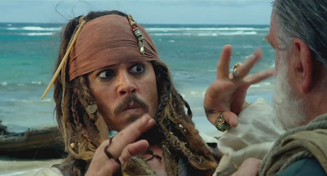

Los Anclajes o Enlaces tipo Ancla
En ciertas ocasiones, hay páginas que poseen gran cantidad de contenido y se dificulta la navegación, pues hay que subir "manualmente" o bajar hasta cierta parte de la página, o hasta cierto título/subtítulo que haya en el contenido que estamos visualizando. Y es ahí donde las anclas entran en juego. Para explicarlo mejor, imaginemos la página de Wikipedia, aparece primero una definición de cierto tema, luego aparece un pequeño índice o tabla de contenido del tema que se desarrollará a continuación, y al hacer clic en cada ítem de ese índice, la ventana del navegador corre hacia esa parte en concentro, dentro de la misma página.
Código en HTML
<a href="#arriba" title="Ir arriba">Ir arriba</a>
<a name="arriba"></a>
En el navegador al hacer clic en "Ir arriba", me llevará al inicio de esta página
Ir arriba ¿Así de sencillo? Tomado de google.com